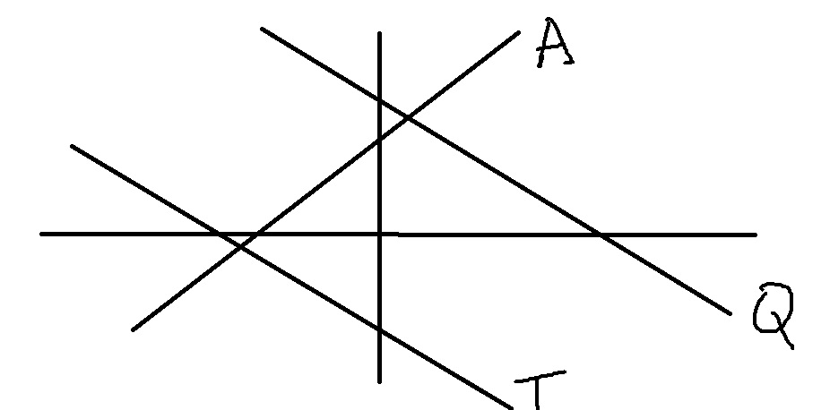

Enter your name
Grade 9 Test 1 Mathematics
Functions
Question 1
y = - 2x + 5
Which one of the following is correct about the slope:
Undefined
Positive
Negative
Result[]
Question 2
y = - 4x - 20
Which one of the following is the correct x - intercept:
(- 5 ; 0)
(0 ; - 5)
(-20 ; 0)
Result[]
Question 3
y = 2x + 4
Which one of the following is the correct y - intercept:
(0 ; - 4)
(4 ; 0)
(0 ; 4)
Result[]
Question 4
k(- 1 ; 8)
Which one of the following is the correct quadrant of K:
Third
Second
Fourth
Result[]
Question 5
y = -2x + 10
Which one of the following is the correct value of y if x = 4:
y = 2
y = - 2
y = - 7
Result[]
Question 6
(-5 ; 0)
Which one of the following is the correct point of the above point:
A
P
B
Result[]
Question 7

Which one of the following is the correct line for y = x + 4
Q
A
T
Result[]
Question 8
Which one of the following has a more positive gradient:
Equal Gradients
N
L
Result[]
Question 9
A(- 3 ; 1) and Q(- 2; 16)
Choose the correct gradient below:
m = 3
m = - 4
m = - 7
Result[]
Question 10
y = 4x - 28
Choose the correct x and y intercepts:
x = 7 and y = 28
x = - 28 and y = 7
x = 7 and y = - 28
Result[]
Click here to submit all your work
Your marks will be displayed here